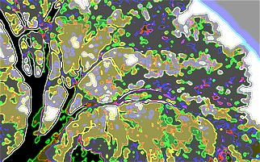

an R package for scenario tree construction
To use scenario, you'll need to download and install a recent version of the statistical programming environment, R. Then simply open the R console and enter:
install.packages("scenario")
Building and checking scenario trees
Xu et al., 2015. Scenario tree reduction in stochastic programming with recourse for hydropower operations, Water Resources Research, 51, 6359-6380 | html
Dupacova et al., 2000. Scenarios for multistage stochastic programs. Annals of operations research 100.1-4, 25-53 | pdf
Shapiro and Phillpot, A tutorial on stochastic programming | pdf